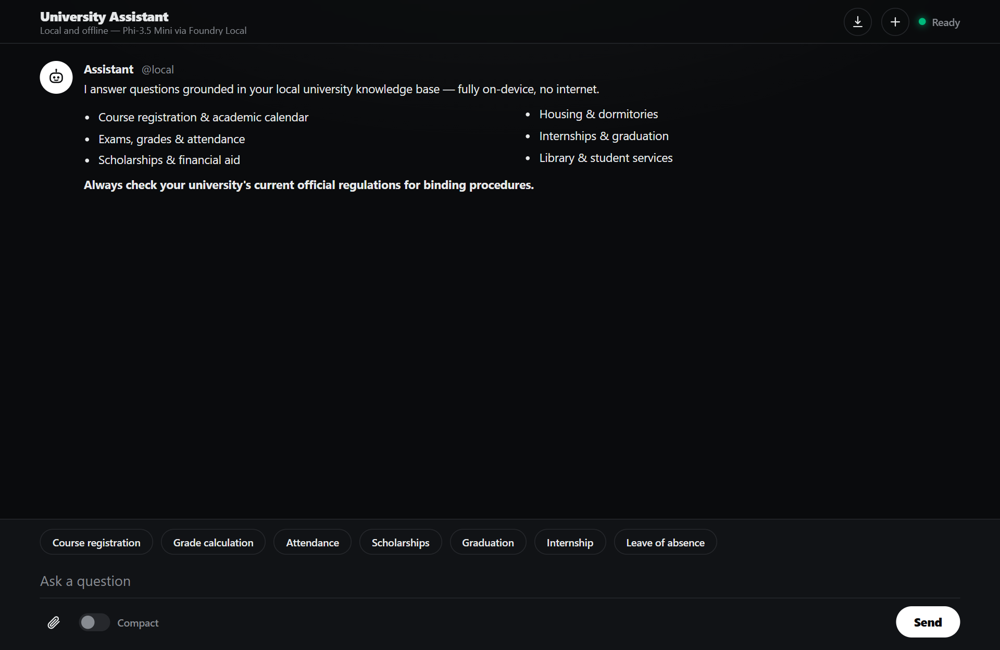
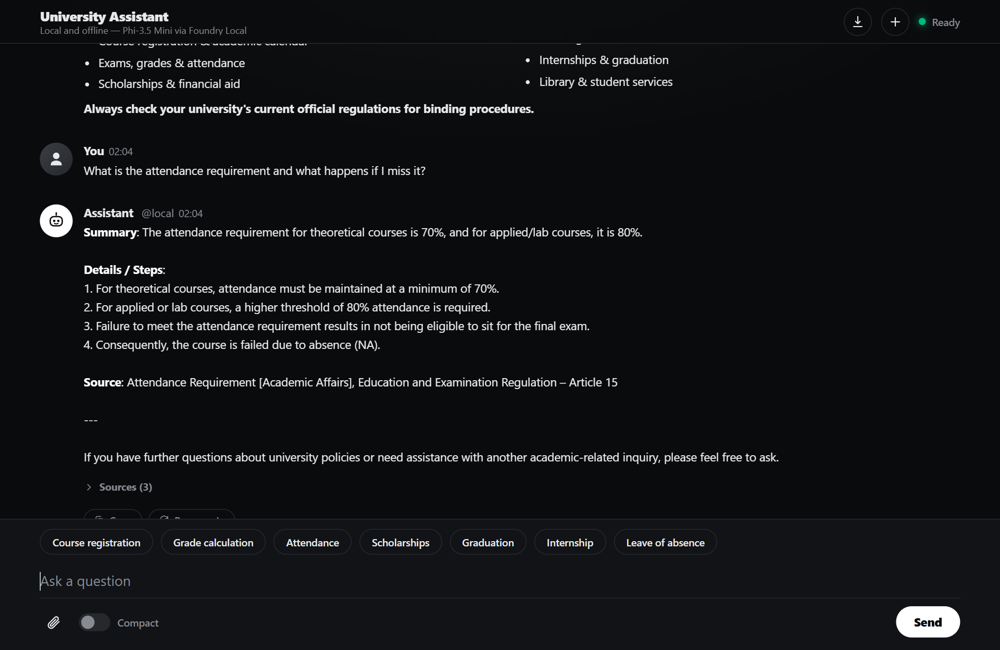
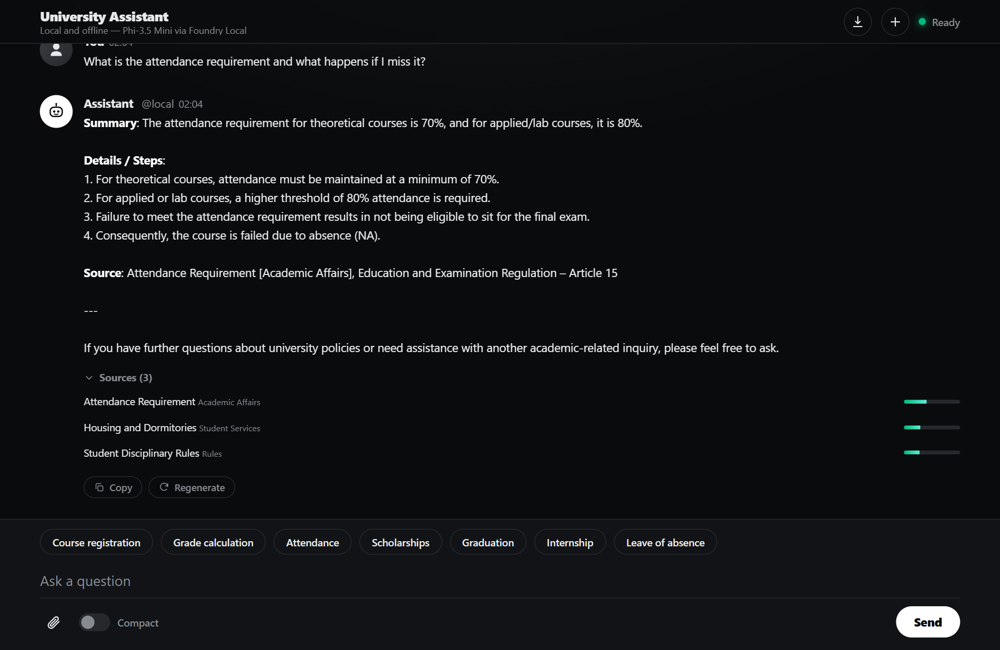
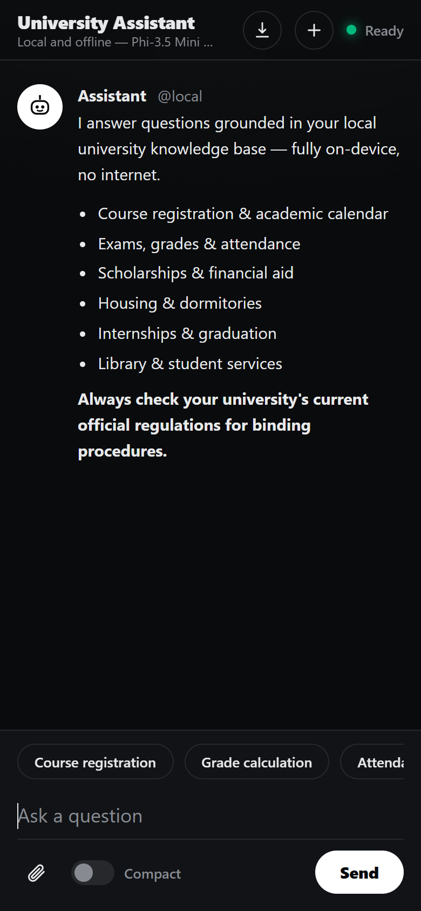
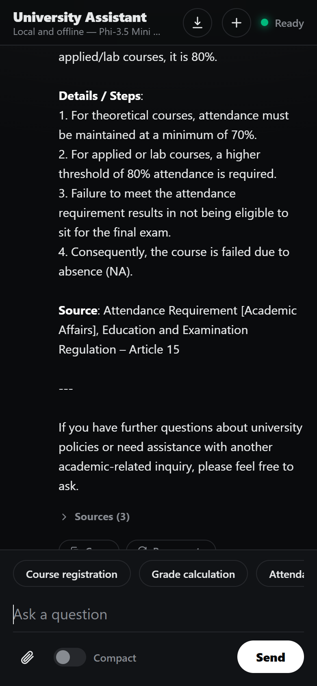
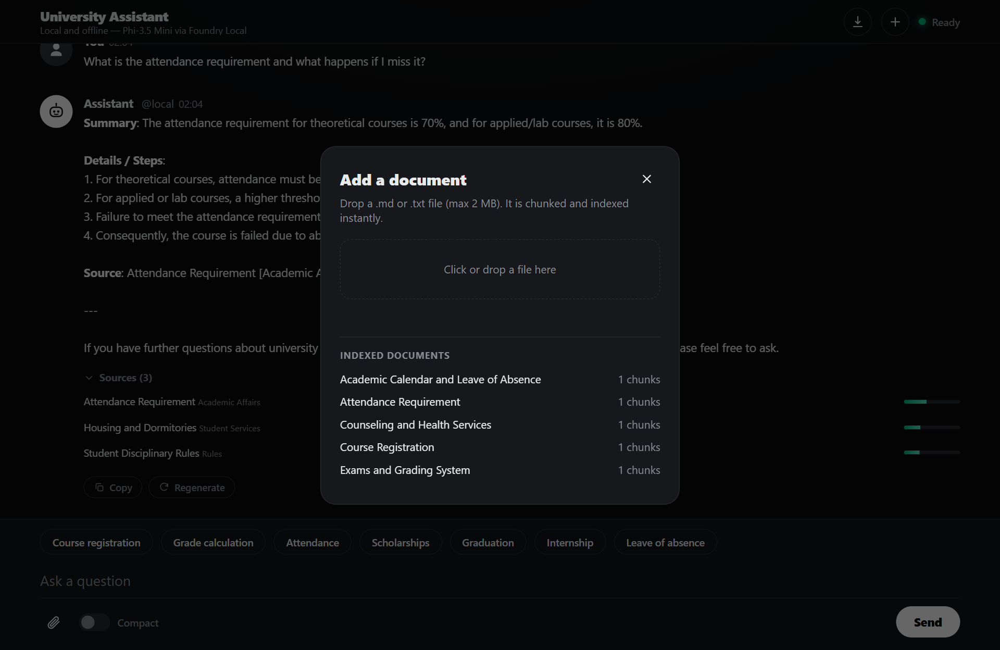

A developer's guide to building an offline AI student assistant using Retrieval-Augmented Generation, the Foundry Local SDK, and JavaScript.
Imagine it is 2 a.m. the night before the add-drop deadline. A student needs to know the exact attendance rule, how the GPA is calculated, and whether their scholarship survives a failed course — and the answers are buried across a dozen PDFs on the university website.
This is the problem this project solves: a fully offline RAG-powered student assistant that runs entirely on your machine. No cloud. No API keys. No outbound network calls. Just a local language model, a local vector store, and your own documents, all accessible from a browser on any device.
In this post you will learn how it works, how to build your own, and the key architectural decisions behind it.

Retrieval-Augmented Generation (RAG) makes AI models genuinely useful for domain-specific tasks. Rather than hoping the model "knows" the answer from its training data, you:
The result is fewer hallucinations, traceable answers, and an AI that works with your content rather than relying on general knowledge.
This project uses RAG, but there is a complementary pattern called Context-Augmented Generation (CAG). The local-cag sample demonstrates CAG using the same Foundry Local stack.
| RAG (this project) | CAG | |
|---|---|---|
| Context | Retrieved dynamically per query from a vector store | Entire document set loaded into the context window upfront |
| Best for | Large or growing document collections | Small, stable sets that fit in the context window |
| Scalability | Scales to thousands of documents | Limited by the model's context window |
| When to choose | Documents change often, are large, or need precise sourcing | A small, curated set where you want maximum simplicity |
This project is intentionally simple. No frameworks, no build steps, no Docker:
| Layer | Technology | Why |
|---|---|---|
| AI Model | Foundry Local + Phi-3.5 Mini | Runs locally via the SDK, no GPU needed |
| Backend | Node.js + Express | Lightweight, fast, widely understood |
| Vector Store | SQLite (better-sqlite3) | Zero infrastructure, single file on disk |
| Retrieval | TF-IDF + cosine similarity | No embedding model required, fully offline |
| Frontend | Single HTML file with inline CSS | No build step, responsive, streaming UI |
The total runtime dependency footprint is just three npm packages: express, foundry-local-sdk, and better-sqlite3.
winget install Microsoft.FoundryLocalThe SDK downloads the Phi-3.5 Mini model (approximately 2 GB) the first time you run the application.
git clone https://github.com/Armitorenk/local-rag-university.git
cd local-rag-university
npm install
npm run ingest # Index the 12 university documents
npm start # Start the server (loads the model via the SDK)Open http://127.0.0.1:3000 and start chatting.
On first start the SDK fetches the model catalog from the cloud once. If that call is rate-limited (HTTP 429), the chat engine retries with backoff automatically — the model itself still runs locally.
Browser (single HTML file)
│ POST /api/chat/stream
▼
Express server
├─► VectorStore ── SQLite (rag.db) TF-IDF + cosine → top-3 chunks
└─► ChatEngine ── prompt = system + retrieved context + question
▼
Foundry Local → Phi-3.5 Mini → streamed tokens (SSE) → browser.md files in docs/Let us trace what happens when a student asks: "What is the attendance requirement?"
question → TF-IDF vector → inverted-index candidates → cosine top-3
→ prompt(system + chunks + question) → Phi-3.5 Mini → streamBefore any queries happen, you run npm run ingest. This reads every .md file from docs/, parses optional YAML front-matter, splits each document into overlapping chunks (~200 tokens, 25-token overlap), computes a TF-IDF vector for each chunk, and stores everything in data/rag.db.
The server converts the question into a TF-IDF vector, uses an inverted index to find candidate chunks sharing terms with the query, scores them by cosine similarity, and returns the top 3. A relevance guard drops weak matches: if even the best chunk barely matches (a greeting or off-topic question), the context becomes "no relevant documents," which stops the model from inventing an answer.
System: You are a local, offline university student assistant. Use only the retrieved context...
Context:
[Chunk 1: Attendance Requirement — General Rule...]
[Chunk 2: Attendance Requirement — Excuses...]
User: What is the attendance requirement?The prompt is sent to the local model via the Foundry Local SDK. The response streams back token by token through Server-Sent Events (SSE):

Every response includes expandable source references with relevance scores, so you can verify exactly which documents the AI used:

Foundry Local is what makes the "offline" part possible. It runs small language models (SLMs) on GPU, NPU, or CPU; manages model discovery, downloading, and lifecycle through the SDK; provides a native chat client for completions and streaming; and works entirely offline once the model is cached.
import { FoundryLocalManager } from "foundry-local-sdk";
const manager = FoundryLocalManager.create({ appName: "university-assistant" });
const model = await manager.catalog.getModel("phi-3.5-mini");
await model.download();
await model.load();
const chatClient = model.createChatClient();
const response = await chatClient.completeChat([
{ role: "system", content: "You are a helpful assistant." },
{ role: "user", content: "What is the attendance requirement?" }
]);
console.log(response.choices[0].message.content);For larger collections or when semantic similarity matters more than keyword overlap, swap in an embedding model. The vector store also uses an inverted index, an in-memory row cache, and prepared statements to keep retrieval sub-millisecond.
The interface is a single HTML file with inline CSS — no build step:
| Desktop | Mobile |
|---|---|
 |

Users can upload new documents without restarting the server:

The upload endpoint (POST /api/upload) receives the markdown, chunks it, computes TF-IDF vectors, and inserts the chunks into SQLite in memory. The new document is immediately available for retrieval.
For a knowledge-base assistant, the system prompt is engineered to:
This pattern transfers to any domain where accuracy matters: HR policies, IT support, product manuals, legal handbooks.
docs/ with your own .md files (with optional YAML front-matter)src/prompts.js (keep the "use only retrieved context, never fabricate" rules)src/config.js: chunkSize, chunkOverlap, topKconfig.model — larger models give better quality, smaller ones are fasterBuilding a local RAG application does not require a PhD in machine learning or a cloud budget. With Foundry Local, Node.js, and SQLite you can create a fully offline AI assistant that answers questions grounded in your own documents.